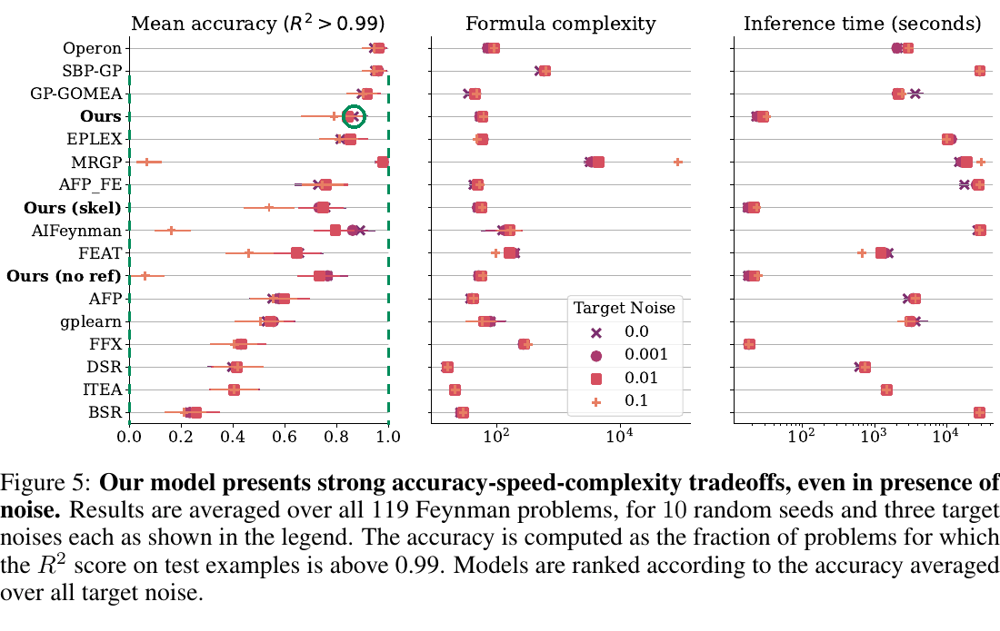
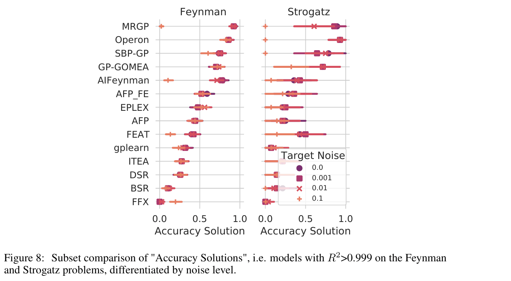
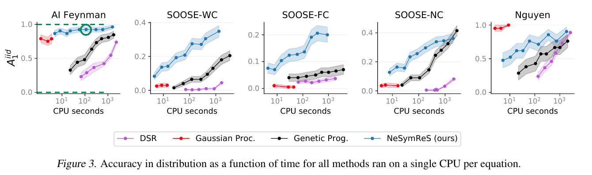
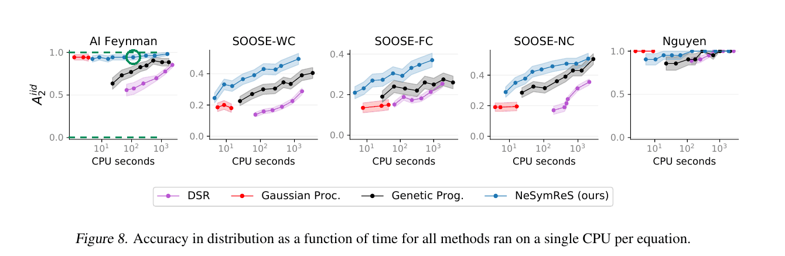
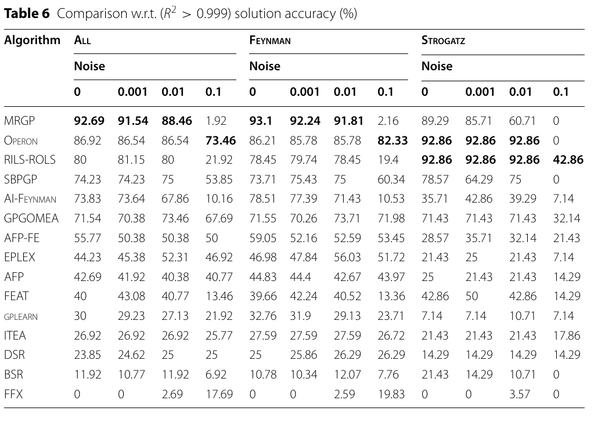

Reproductions
srbf is a benchmark for symbolic regression: it runs every method on the same problems with the same evaluation code. To check that it runs each method the way the method's authors do, this page sets srbf's results next to the authors' own published results, from their papers or from benchmark runs they made themselves, wherever the problems and settings can be matched. Each comparison comes with a test of the difference. The terms and the tests are explained below.
Methods with a matching published result
E2E
Feynman laws with test R² above 0.99
| Result | p | |
|---|---|---|
| Published | 86.6 % | |
| srbf, run 1 | 104 of 120 (86.7 %, 95 % interval 79.4 to 91.6 %) | 1.00 |
| srbf, run 2 | 103 of 120 (85.8 %, 95 % interval 78.5 to 91.0 %) | 0.79 |
No significant difference.
- Published
- Fig. 5, noise 0, mean of 10 seeds per law, read from the figure's drawing (below). SRBench's data for 119 of the laws, split 75/25 into training and test points. E2E's model reads 200 points at a time (a bag) and proposes candidate formulas for each bag: up to 100 bags with 10 candidates each, 1,000 candidates in all.
- srbf
- The 120 Feynman laws (the paper's 119 and one law missing from SRBench's data). srbf's own runs of E2E at 256 candidates per bag. srbf's runs use 512 training points, which are 3 bags, so 768 candidates in all, the closest of srbf's settings to the paper's 1,000. 512 fresh test points.

How the number was read from the figure:
The figure is a vector drawing, so every marker has exact coordinates on the page, in points. The axis's tick lines for 0.0 and 1.0 are at x = 159.225 and 261.869; the noise-0 marker of “Ours” (the colour of the legend's 0.0 entry) is centred at x = 248.068. Its value is (248.068 − 159.225) / (261.869 − 159.225) = 0.8655, shown rounded as 86.6 %.
To read it again from the paper's own PDF, which the script downloads and checks:
pip install pymupdf
python scripts/read_published_figures.py e2e-fig5GP-GOMEA
Feynman laws with test R² above 0.999
| Result | p | |
|---|---|---|
| Published | 70.9 % of 928 fits | |
| srbf | 83 of 116 (71.6 %, 95 % interval 62.8 to 79.0 %) | 0.81 |
No significant difference. If srbf solved each problem with its published success rate, it would solve 82.2 of 116 on average.
- Published
- SRBench 2021's published results, noise 0. GP-GOMEA's first author, Virgolin, is a co-author of SRBench 2021. 116 laws, 8 fits each. Per fit, 10,000 training points and a 25,000-point test set; 1,000,000 evaluations (formulas scored on the data).
- srbf
- The 116 laws SRBench 2021 reports. SRBench 2021's GP-GOMEA settings, 1,000,000 evaluations; 512 training and 512 test points; one fit per law. Settings:
configs/evaluation/panels/gpgomea_srbench2021_feynman.yaml.

The published results file (pinned on GitHub) and the computation:
import pandas as pd
r = pd.read_feather("https://media.githubusercontent.com/media/cavalab/srbench/e5ded4715ed5721703353d3500a2fdb99004faf1/results/ground-truth_results.feather")
r = r.query("algorithm == 'GP-GOMEA' and data_group == 'Feynman' and target_noise == 0")
(r.r2_test > 0.999).mean() # 0.709: 658 of 928 fitsNeSymReS
Feynman laws on which over 95 % of the test points are within 5 % of the true value
| Result | p | |
|---|---|---|
| Published | 48 of 52 (92.3 %) | |
| srbf, run 1 | 36 of 52 (69.2 %, 95 % interval 55.7 to 80.1 %) | 0.0052 |
| srbf, run 2 | 37 of 52 (71.2 %, 95 % interval 57.7 to 81.7 %) | 0.0098 |
srbf's runs succeed less often than the published ones.
The released model is not the one the paper's figures report: the paper used a model pre-trained on 10 million equations, and the release is pre-trained on 100 million. The published row and srbf's runs therefore come from different models.
- Published
- Fig. 3, the paper's main accuracy measure. The 52 laws with up to three variables, one fit each. The paper's model, pre-trained on 10 million equations, with beam width 32 (the number of partial formulas the model keeps while it writes one).
- srbf
- The same 52 laws. The released model, pre-trained on 100 million equations; srbf's own runs at beam width 32; 512 training and 512 test points.

How the number was read from the figure:
The figure is a vector drawing, so every marker has exact coordinates on the page, in points. The panel's gridlines for 0.0 and 1.0 are at y = 145.636 and 90.065 (y grows downwards). The NeSymReS line has nine markers, one per beam width from 1 to 256 (the paper's Table 1) in order of time; the sixth, beam width 32, is centred at y = 94.340. Its value is (94.340 − 145.636) / (90.065 − 145.636) = 0.9231, which is 48.00 of the 52 laws. All nine markers read as whole numbers of laws (45, 47, 45, 47, 48, 48, 48, 48 and 50), which confirms both the reading and the 52.
To read it again from the paper's own PDF, which the script downloads and checks:
pip install pymupdf
python scripts/read_published_figures.py nesymres-fig3Feynman laws with test R² above 0.95
| Result | p | |
|---|---|---|
| Published | 49 of 52 (94.2 %) | |
| srbf, run 1 | 43 of 52 (82.7 %, 95 % interval 70.3 to 90.6 %) | 0.12 |
| srbf, run 2 | 46 of 52 (88.5 %, 95 % interval 77.0 to 94.6 %) | 0.49 |
No significant difference.
- Published
- Fig. 8. The same 52 laws and model as above.
- srbf
- The same 52 laws. The released model, as above.

How the number was read from the figure:
Read as for Fig. 3: the gridlines for 0.0 and 1.0 are at y = 364.651 and 312.263, and the sixth NeSymReS marker (beam width 32) is centred at y = 315.285. Its value is (315.285 − 364.651) / (312.263 − 364.651) = 0.9423, which is 49.00 of the 52 laws. All nine markers read as whole numbers of laws (48, 49, 48, 49, 49, 49, 50, 50 and 51).
To read it again from the paper's own PDF, which the script downloads and checks:
pip install pymupdf
python scripts/read_published_figures.py nesymres-fig8Operon
Feynman laws with test R² above 0.999
| Result | p | |
|---|---|---|
| Published | 85.2 % of 1,160 fits | |
| srbf | 98 of 116 (84.5 %, 95 % interval 76.8 to 90.0 %) | 0.80 |
No significant difference. If srbf solved each problem with its published success rate, it would solve 98.8 of 116 on average.
- Published
- SRBench 2021's published results, noise 0. Operon's first author, Burlacu, is a co-author of SRBench 2021. 116 laws, 10 fits each. Per fit, 10,000 training points and a 25,000-point test set; 1,000,000 evaluations (formulas scored on the data).
- srbf
- The 116 laws SRBench 2021 reports. SRBench 2021's Operon settings, 1,000,000 evaluations; 512 training and 512 test points; one fit per law. Settings:
configs/evaluation/panels/operon_srbench2021_feynman.yaml.
The published results file (pinned on GitHub) and the computation:
import pandas as pd
r = pd.read_feather("https://media.githubusercontent.com/media/cavalab/srbench/e5ded4715ed5721703353d3500a2fdb99004faf1/results/ground-truth_results.feather")
r = r.query("algorithm == 'Operon' and data_group == 'Feynman' and target_noise == 0")
(r.r2_test > 0.999).mean() # 0.852: 988 of 1,160 fitsQLattice
Test R² on six physics datasets, as a rank among the published fits: the share of the 30 published QLattice fits on the same dataset that score lower (ties count half). 0 is below all of them, 1 above all, 0.5 in the middle
| Result | p | |
|---|---|---|
| Published | 30 fits per dataset (mean rank 0.50 by definition) | |
| srbf, 12 fits | mean rank 0.41 | 0.33 |
No significant difference.
- Published
- SRBench 2025's published results (its first-principles track), with the settings QLattice's developers submitted. SRBench's own data, split and seeds; 200 epochs.
- srbf
- Six of the datasets, two seeds each (12 fits). srbf's QLattice code, run inside SRBench's protocol (SRBench's data, split and seeds 769 and 860); 200 epochs.
The published results file (pinned on GitHub) and the computation:
import pandas as pd
r = pd.read_feather("https://media.githubusercontent.com/media/cavalab/srbench/dc3f6daa93bf10955df8775256a6f8644f38fd93/results/first-principles-tuning/results.feather")
r = r.query("algorithm == 'QLattice'")
r.groupby('dataset').r2_test.size() # 30 fits on each datasetRILS-ROLS
Feynman laws with test R² above 0.999
| Result | p | |
|---|---|---|
| Published | 78.2 % of 1,158 fits | |
| srbf | 94 of 116 (81.0 %, 95 % interval 73.0 to 87.1 %) | 0.16 |
No significant difference. If srbf solved each problem with its published success rate, it would solve 90.5 of 116 on average.
- Published
- The authors' published results (github.com/kartelj/rils-rols, paper_resources/srbench), noise 0. 116 laws, 10 fits each (two of the 1,160 are missing from the results), on SRBench's data and 75/25 split; 1,000,000 fit calls (formulas fitted to the data).
- srbf
- The 116 laws of the paper, the ones SRBench 2021 reports. The authors' settings, 1,000,000 fit calls; 512 training and 512 test points; one fit per law. Settings:
configs/evaluation/panels/rilsrols_paper_feynman.yaml.

The published results file (pinned on GitHub) and the computation:
import pandas as pd
r = pd.read_feather("https://raw.githubusercontent.com/kartelj/rils-rols/54861c1c8dc4a521da6885bdcfdc54ecb7b38c31/paper_resources/srbench/feathers/ground-truth_results_rils-rols.feather")
r = r.query("data_group == 'Feynman' and target_noise == 0")
(r.r2_test > 0.999).mean() # 0.782: 905 of 1,158 fitsNot compared yet
DSR
SRBench 2021 reports DSR on the Feynman laws: 22.6 % of its fits reach a test R² above 0.999, at 1,000,000 expressions per fit. srbf's own runs of DSR use at most 16,000 expressions, so a comparison needs a run of srbf's DSR at SRBench's settings.
PySR
SRBench 2025 reports PySR on the physics datasets QLattice is compared on above, 30 fits per dataset with 50 minutes each. A comparison needs a run of srbf's PySR inside SRBench's protocol, as for QLattice. PySR's own paper evaluates it on empirical laws that are not among srbf's problems.
uDSR*
SRBench 2025 reports uDSR on twelve datasets of its black-box track, 30 fits per dataset. A comparison needs a run of srbf's uDSR inside SRBench's protocol. The uDSR paper's own results use 2 million expressions per problem, and srbf runs uDSR* at 13,000. The asterisk marks that srbf runs uDSR as far as it was released: without the paper's AI Feynman step (a pre-processing that splits a problem into simpler ones) and without pre-training.
How to read the comparisons
Problems and words
Most comparisons use the Feynman laws: 120 physics formulas from the AI Feynman database (Udrescu and Tegmark, 2020), each to be found again from points sampled from it. SRBench is a benchmark that ran many methods on these laws and published every result; SRBench 2021 reports 116 of them. A fit is one attempt of a method on one problem. A run of srbf is one pass over all the problems; srbf ran some methods twice, each time on fresh points, and each run is shown on its own. Budgets are counted in each method's own unit, named in its row.
The numbers
Each comparison uses the measure of the publication it is compared with, for example the share of laws on which a formula reaches an R² above 0.999 on test points. srbf's share comes with a 95 % interval: a range of plausible values for srbf's true success rate, built so that such intervals contain the true rate about 95 % of the time.
Under each comparison is where the published number comes from: the figure or table of the publication, or, where the number is computed from the authors' published results files, the file, pinned to the version used, and the computation. A number read from a figure comes with the exact positions it was read from and a script that reads it again from the paper's own PDF.
The p-value
p is the probability of a difference at least as large as the one shown if srbf succeeded exactly as often as the published fits. Below 0.05, a difference this large would rarely arise by chance alone. A large p means that no difference was found; it does not prove that the two numbers are equal. A difference reaches p below 0.05 only above a certain size: about 4 to 5 percentage points where every law's published share is known (116 laws), about 7 for E2E and about 15 to 17 for NeSymReS (52 laws).
How p is computed depends on what the publication reports. Where it lists every problem with its share of successful fits, srbf's count is compared with the counts srbf would reach if it solved each problem with that share. Where it reports one overall share, the test is an exact binomial test against that share. Where it reports one fit per problem, the two counts are compared with Fisher's exact test; it treats them as independent although they come from the same laws, which makes it more cautious than a test that pairs the laws. Where srbf's fits are ranked among the published fits, their mean rank is compared with the mean of ranks drawn uniformly at random. The per-problem, binomial and rank tests take the published numbers as exact; Fisher's test treats both counts as samples. Every test is exact and two-sided.
Points and noise
Except for QLattice, which ran inside SRBench's own protocol, srbf fits each problem on 512 points and tests the formula on 512 fresh points from the same ranges, without noise. The publications often used more points and more fits per problem. Each comparison lists the settings on both sides.